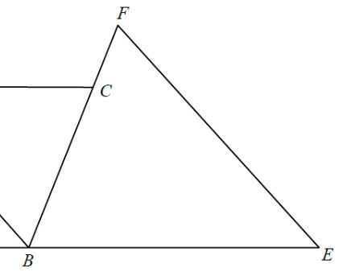

In the figure, ABCD is a rhombus. ABE and BCF are straight lines
such that BE = EF. If \(\angle BEF = 56^\circ\), then \(\angle BDC =\)
A.\(28^\circ\)
B.\(31^\circ\)
C.\(34^\circ\)
D.\(62^\circ\)

Figure (original exam diagram)
Step 1 · Mark the given data
\(ABCD\) is a rhombus, so all four sides are equal:
\[ AB = BC = CD = DA \]
\(ABE\) is a straight line, so \(B\) lies on segment \(AE\).
\(BE = EF\) makes \(\triangle BEF\) isosceles with \(\angle BEF = 56^\circ\).
Key idea: in a rhombus, opposite sides are parallel, so we can carry angles across the figure: \(AD // BC\) and \(CD // AB\).
Step 2 · Angles of the isosceles triangle BEF
Angle Sum of a Triangle\(\angle E+\angle EBF+\angle BFE=180^{\circ}\)With \(BE=EF\) the base angles are equal, so \(56^{\circ}+2x=180^{\circ}\) and \(x=62^{\circ}\).
In \(\triangle BEF\), \(BE = EF\) (given), so the base angles at \(B\) and \(F\) are equal:
\[ \angle EBF = \angle BFE = x \]
Angle sum of a triangle:
\[ 56^\circ + 2x = 180^\circ \]
\[ x = \frac{180^\circ - 56^\circ}{2} = \frac{124^\circ}{2} = 62^\circ \]
So \(\angle EBF = 62^\circ\).
Check: the two equal sides \(BE\) and \(EF\) meet at \(E\), so the angles opposite them are equal — those are the angles at \(F\) and at \(B\). ✔
Step 3 · Transfer the angle with straight lines
\(ABE\) is a straight line and \(BCF\) is a straight line.
Since \(\angle EBF\) is measured on the straight line \(BCF\) (with vertex \(B\)),
and \(\angle EBC\) is a straight angle:
\[ \angle ABC = \angle EBF = 62^\circ \quad(\text{vertically opposite angle}) \]
More carefully: \(A, B, E\) are collinear and \(C, B, F\) are collinear, so the angle of the triangle at \(B\) equals the angle inside the rhombus at \(B\):
\[ \angle ABC = 62^\circ \]
Step 4 · Rhombus angles are supplementary
Co-interior Angles of a Rhombus\(AD // BC\ \Longrightarrow\ \angle ABC+\angle BCD=180^{\circ}\)The adjacent angles of the rhombus at \(B\) and \(C\) are supplementary, so \(\angle BCD=180^{\circ}-62^{\circ}=118^{\circ}\).
In a rhombus, adjacent angles are supplementary (co-interior angles):
\[ \angle BCD = 180^\circ - \angle ABC = 180^\circ - 62^\circ = 118^\circ \]
In \(\triangle BCD\), \(BC = CD\) (sides of a rhombus), so the base angles are equal:
\[ \angle CBD = \angle BDC \]
\[ 2\angle BDC + 118^\circ = 180^\circ \]
\[ \angle BDC = \frac{180^\circ - 118^\circ}{2} = \frac{62^\circ}{2} = 31^\circ \]
Step 5 · Fallback: rhombus diagonal bisects
Equivalently, the diagonals of a rhombus bisect the interior angles:
\[ \angle BDC = \tfrac12 \angle ADC \]
And together with \(\angle ABC + \angle ADC = 180^\circ\) and \(\angle ABC = 62^\circ\):
\[ \angle ADC = 118^\circ \Rightarrow \angle BDC = 59^\circ\ \text{?} \]
Wait — careful! The diagonal that bisects \(\angle ADC\) is \(DB\), so \(\angle BDC = \tfrac12 \angle ADC = 59^\circ\)? ? No: \(\angle BDC\) is the angle at \(D\) in \(\triangle BCD\), i.e.\ \(\angle BDC = \angle CDB\), between the side \(DC\) and the diagonal \(DB\) — this is not the same as half of \(\angle ADC\).
So we do not get \(59^\circ\). We keep the triangle reasoning:
\[ \angle BDC = 31^\circ \]
Always work in \(\triangle BCD\) directly with \(BC = CD\).
Question. In the figure, \(ABCD\) is a rhombus. \(ABE\) and \(BCF\) are straight lines such that \(BE=EF\). If \(\angle BEF=44^{\circ}\), find \(\angle BDC\).
Show the worked solution
Step 1. In \(\triangle BEF\), \(BE=EF\), so the base angles at \(B\) and \(F\) are equal; write \(\angle EBF=\angle BFE=x\).
Step 2. Angle sum: \(44^{\circ}+2x=180^{\circ}\), so \(x=68^{\circ}\) and \(\angle EBF=68^{\circ}\).
Step 3. Since \(A\), \(B\), \(E\) are collinear and \(C\), \(B\), \(F\) are collinear, the vertically opposite angle gives \(\angle ABC=\angle EBF=68^{\circ}\).
Step 4. In the rhombus, adjacent angles are supplementary: \(\angle BCD=180^{\circ}-68^{\circ}=112^{\circ}\). In \(\triangle BCD\), \(BC=CD\), so \(2\angle BDC+112^{\circ}=180^{\circ}\), giving \(\angle BDC=\dfrac{68^{\circ}}{2}=34^{\circ}\).
Answer: \(\angle BDC=34^{\circ}\)
Significance of the numbers:
\(56^\circ\) forces \(\angle EBF = 62^\circ\) (isosceles triangle).
This equals \(\angle ABC\) because \(A,B,E\) and \(C,B,F\) are collinear and the triangle’s angle at \(B\) sits exactly in the rhombus corner at \(B\).
The rhombus then forces \(BC = CD\), so \(\triangle BCD\) is isosceles with apex angle \(118^\circ\), giving base angles \(\tfrac{62^\circ}{2} = 31^\circ\).